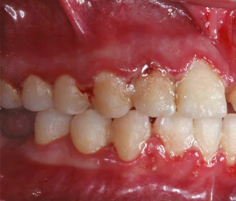
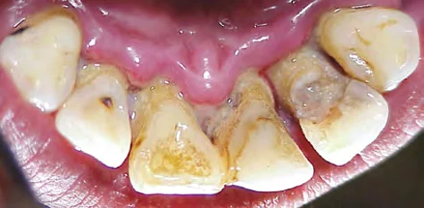

نسخه استخراجشده؛ ترجمه یا تأیید علمی انجام نشده است. وضعیت: captured
ژنژیویت نکروزان با سه یافته همزمان تشخیص داده میشود. اگر یکی نباشد، به تشخیص دیگری فکر کن:

| یافته | جزئیات | |
|---|---|---|
| ۱ | نکروز پاپیلای بیندندانی | پاپیلا به شکل حفرهای و بریدهشده در میآید؛ گویی با پانچ برداشته شده |
| ۲ | درد | شروع ناگهانی و شدت بالا — برخلاف بیشتر بیماریهای لثه |
| ۳ | خونریزی | اغلب خودبهخودی، حتی بدون تحریک |
🔑 نکروز حفرهای پاپیلا، اختصاصیترین یافته است. ژنژیویت ساده پاپیلا را متورم میکند؛ بیماری نکروزان آن را میخورد.
لایهای خاکستری-زرد روی نواحی نکروزه، متشکل از فیبرین، بافت نکروزه، لکوسیت و باکتری. با گاز پاک میشود و سطحی قرمز و خونریزیدهنده باقی میگذارد.
⚠️ سایر یافتهها — تب، لنفادنوپاتی، بوی بد شدید دهان — متغیرند و برای تشخیص ضروری نیستند. بوی بد شایع است اما اختصاصی نیست.
ترکیب میکروبی نسبتاً ثابتی در ضایعات نکروزان دیده میشود:
ترپونما (اسپیروکتها)
فوزوباکتریوم
پرووتلا اینترمدیا
سلنوموناس
🔑 ویژگی منحصربهفرد: در بیماری نکروزان، باکتریها به داخل بافت زنده نفوذ میکنند — برخلاف پریودنتیت معمول که در آن باکتریها در پاکت باقی میمانند و آسیب را واکنش میزبان ایجاد میکند.
| عامل | سازوکار |
|---|---|
| استرس روانی | افزایش کورتیزول و اختلال عملکرد نوتروفیل |
| سیگار | کاهش خونرسانی و اختلال ایمنی موضعی |
| نقص ایمنی، بهویژه HIV | اختلال دفاع میزبان |
| سوءتغذیه | تضعیف ایمنی و ترمیم بافت |
| کمخوابی و خستگی | سرکوب ایمنی |
| بهداشت ضعیف دهان | بار میکروبی بالا |
📌 تصویر کلاسیک: دانشجوی جوان سیگاری در دوره امتحانات با کمخوابی. اما در بیمار بدون این زمینهها، بررسی وضعیت ایمنی ضروری است.
| وضعیت | گستره درگیری |
|---|---|
| ژنژیویت نکروزان (NG) | محدود به لثه؛ بدون از دست رفتن چسبندگی |
| پریودنتیت نکروزان (NP) | افزوده شدن از دست رفتن چسبندگی و استخوان |
| استوماتیت نکروزان | گسترش فراتر از مخاط لثهای به استخوان و بافتهای عمقی |
| نوما | نکروز پیشرونده که پوست صورت را میشکافد؛ در سوءتغذیه شدید |
🔑 تنها تفاوت NG و NP، وجود یا نبود از دست رفتن چسبندگی است — همان معیاری که ژنژیویت را از پریودنتیت جدا میکند.

دبریدمان بسیار ملایم نواحی سطحی با اولتراسونیک؛ بافت بهشدت دردناک است.
شستوشو با آب اکسیژنه ۳ درصد رقیقشده — محیط بیهوازی را بر هم میزند.
کنترل درد و توصیه به مصرف مایعات و تغذیه کافی.
توقف سیگار و مدیریت استرس.
⚠️ مترونیدازول فقط در حضور علائم سیستمیک (تب، بیحالی، لنفادنوپاتی) یا در بیمار دچار نقص ایمنی تجویز میشود — نه بهطور روتین. در بیمار بدون علائم سیستمیک، دبریدمان و کنترل موضعی کافی است.
درمان کامل پریودنتال و ارزیابی مجدد.
حفرههای باقیمانده پاپیلا خودبهخود ترمیم نمیشوند و ممکن است به جراحی اصلاحی نیاز داشته باشند.
پایش منظم؛ عود در صورت بازگشت عوامل مستعدکننده شایع است.
⚠️ اشتباه رایج ۱: تب و لنفادنوپاتی متغیرند؛ سهگانه تشخیصی درد و خونریزی و نکروز پاپیلاست.
⚠️ اشتباه رایج ۲: آنتیبیوتیک روتین نیست.
⚠️ اشتباه رایج ۳: تفاوت NG و NP در از دست رفتن چسبندگی است.